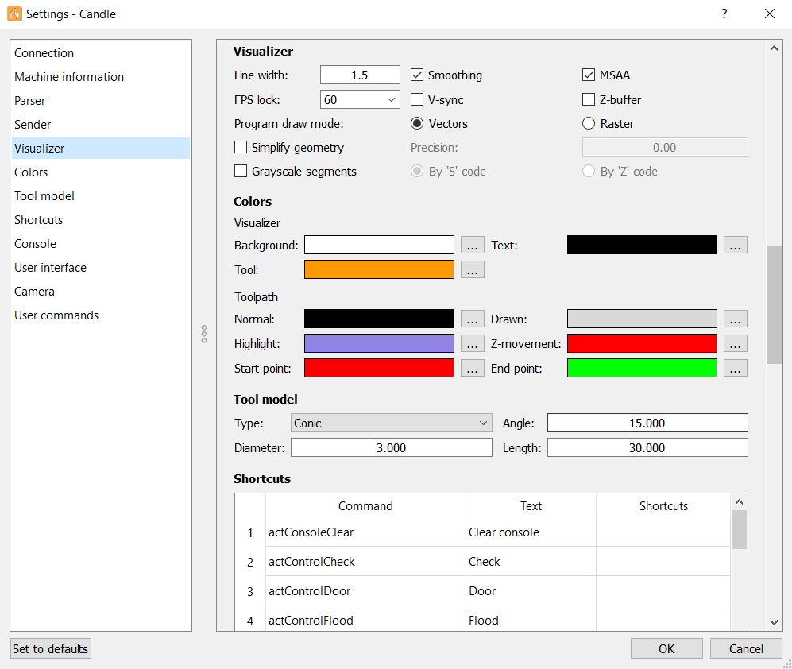

The program settings are available in the Settings dialog, invoked by selecting "Settings" from the Service menu of the application.

The dialog contains three areas: a left panel with a list of setting groups, a right panel with controls for the selected group, and a bottom bar with buttons to reset settings to defaults, confirm changes, or cancel them.
Below is information about all available program settings: group, parameter, description, permissible values, and default value.
| Group | Parameter | Description | Permissible values | Default value |
|---|---|---|---|---|
| Connection | Serial | Select serial port connection type | Enabled, Disabled | Enabled |
| Port | Serial port used to connect to the CNC controller | Path to device | None | |
| Baud | Baud rate for serial communication | 9600, 14400, 19200, 38400, 57600, 115200, any integer value | 115200 | |
| Telnet | Select Telnet connection type | Enabled, Disabled | Disabled | |
| Address | Telnet server address | Any host address | 192.168.0.1 | |
| Port | Telnet server port | Any host port | 23 | |
| WebSocket | Select WebSocket connection type | Enabled, Disabled | Disabled | |
| URL | WebSocket server URL | Any URL | ws://192.168.0.1:81 | |
| Mode - Text | Text type communication | Enabled, Disabled | Enabled | |
| Mode - Binary | Binary type communication | Enabled, Disabled | Disabled | |
| Status query period | Time between status requests to the controller | 10–9999 ms | 100 | |
| Machine information | Spindle speed min. | Minimum spindle rotation speed (used by the "Spindle" panel) | 0–99 999 RPM | 0 |
| Spindle speed max. | Maximum spindle rotation speed | 0–99 999 RPM | 10 000 | |
| Laser power min. | Minimum laser power (used for half‑tone raster visualisation of CP) | 0–99 999 | 0 | |
| Laser power max. | Maximum laser power | 0–99 999 | 100 | |
| Sender | Use program start commands | G‑code commands sent to the CNC controller before transmitting the CP | Set of G‑code commands (JavaScript allowed) | None |
| Use program end commands | G‑code commands sent after the CP has been transmitted | Same as above | None | |
| Use tool change commands | G‑code commands sent when processing tool‑change instructions | Same as above | None | |
| Ignore error responses | Flag that determines whether to abort CP transmission when the controller reports an error | Enabled, Disabled | Disabled | |
| Automatically set parser state before sending from selected line | Enable sending of parser‑configuration commands before transmitting the CP from a chosen line | Enabled, Disabled | Enabled | |
| Pause sender on M6 command | Control whether to pause CP transmission while processing tool‑change instructions | Enabled, Disabled | Enabled | |
| User interface | Font size | Size of UI font | 8, 9, 10, 11, 12 pt or any integer | 9 |
| Panel width | Main window minimum panel width as average char width | 30-60 | 40 | |
| Language | Language used for UI labels | American English, Russian (list can be extended) | American English | |
| Invert slider controls | Invert slider control, useful for touchpads | Enabled, Disabled | Disabled | |
| Shortcuts | – | Key combinations for fast invocation of program functions | Any key combination | None |
| Visualizer | Line width | Thickness of 3D projection lines in the visualiser | 1–9 | 1.5 |
| Smoothing | Enable line smoothing for the 3D projection | Enabled, Disabled | Enabled | |
| MSAA | Multi‑sample anti‑aliasing for the 3D projection | Enabled, Disabled | Enabled | |
| FPS lock | FPS of the 3D projection rendering | 30, 60, 120, any integer | 60 | |
| V-sync | Enable vertical sync | Enabled, Disabled | Disabled | |
| Z-buffer | Enable depth‑buffering for line overlap control | Enabled, Disabled | Disabled | |
| Program draw mode | Method of CP projection: "Vector" (lines) or "Raster" (points) | Vectors, Raster | Vector | |
| Simplify geometry | Limit the minimum segment size when rendering the CP | Enabled, Disabled | Enabled | |
| Simplify geometry – Precision | Minimum segment length used for simplification (0 = only segments on a single line are converted) | 0–99 mm | 0 | |
| Arc approximation segment size – by length | Length of segments that split arcs in CP when displayed in the "Visualizer" and during height‑map creation | 0.1–99 mm (0 = disabled) | 0.1 (disabled) | |
| Arc approximation segment size – by angle | Angle used to subdivide arcs in CP for the same purposes | 0–180° | 5 ° (enabled) | |
| Grayscale segments | Enable point colorization in raster rendering | Enabled, Disabled | Disabled | |
| Grayscale segments – by 'S' code | Color points according to the ‘S’ G‑code value | Enabled, Disabled | Enabled | |
| Grayscale segments – by 'Z' code | Color points according to the ‘Z’ G‑code value | Enabled, Disabled | Disabled | |
| Tool model - Type | Tool model type in the "Visualizer" | Flat, Conic | Conical | |
| Angle | Cone angle of the conical tool model | 0–180° | 15 ° | |
| Diameter | Diameter of the tool model | 0–99 mm | 3 mm | |
| Length | Length of the tool model | 0–999 mm | 30 mm | |
| Colors - Visualizer – Background | Background color in the "Visualizer" window | Any color | White | |
| Visualizer – Text | Text color in the "Visualizer" window | Any color | Black | |
| Visualizer – Tool | Color of the tool model in the "Visualizer" | Any color | Orange | |
| Toolpath – Normal | Color of the main trajectory paths in the CP projection | Any color | Black | |
| Toolpath – Drawn | Color of parts already processed by the CNC when sending the CP | Any color | Gray | |
| Toolpath – Highlight | Color of lines sent to the CNC; color of the marker for the selected CP line | Any color | Purple | |
| Toolpath – Z-movement | Color of vertical trajectory moves | Any color | Red | |
| Toolpath – Start point | Color of the start marker for the CP | Any color | Red | |
| Toolpath – End point | Color of the end marker for the CP | Any color | Green | |
| Console | Show G‑code program commands | Show G‑code commands of the CP in the "Console" during transmission to the controller | Enabled, Disabled | Disabled |
| Show UI commands | Show commands sent via instrument panel elements | Enabled, Disabled | Enabled | |
| Command auto‑completion | Auto‑finish a command when entering it in the "Console" field based on previously typed text | Enabled, Disabled | Enabled | |
| Camera | Name | Name of the camera whose image is shown in the "Camera" window | List of available cameras or any custom name | None |
| Resolution | Image resolution displayed from the camera | Supported resolutions list or any custom resolution | 1280×720 | |
| Position | Horizontal/vertical offset of the camera image in the "Camera" window | Any offset in points | 0, 0 | |
| Zoom | Scaling factor for the camera image | Any number | 1 | |
| Aim position | Relative offset of targeting elements horizontally/vertically | Offset between 0 and 1 in relative units | 0, 0 | |
| Aim size | Diameter of the targeting circle | 1–100 | 20 | |
| Aim color | Color of targeting elements | Any color | Red | |
| Aim line width | Thickness of crosshair lines | 0–100 | 1 | |
| User commands | – | Table of commands for the "User commands" panel | Any set of commands | Test commands |